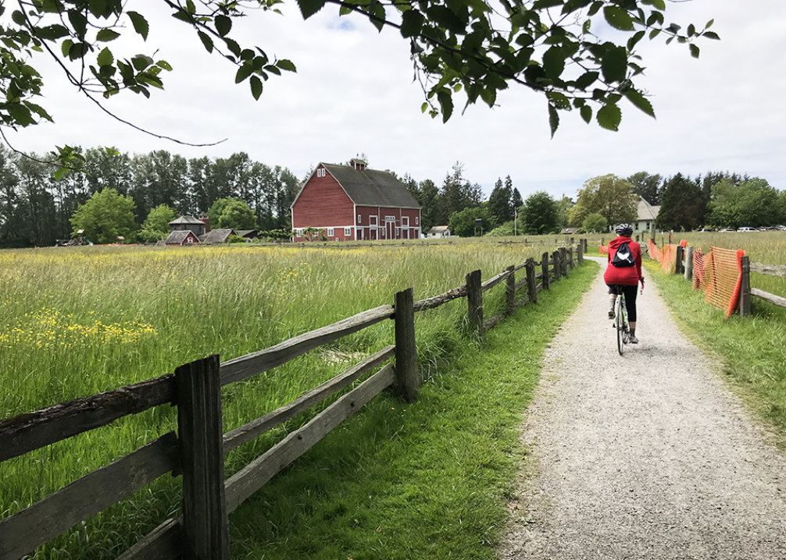
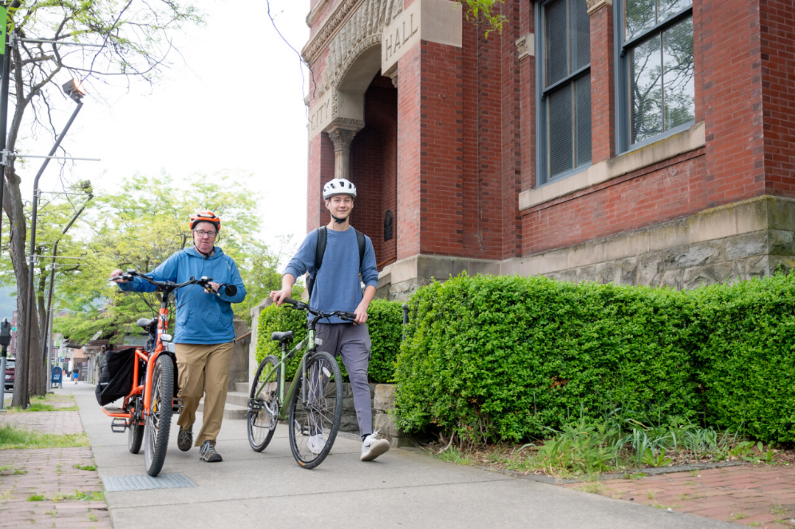

Smart Trips Bike Classes
All classes are free.
All of our classes are designed to help you enjoy getting on your bike and riding effortlessly around town. If you aren’t sure which class is best for you, please give us a call and we will help you choose the class that’s right for you.
Bike classes are one-on-one but you may invite friends or family to join. Classes are usually during business hours but we can often flex our schedules to accommodate other times. To schedule a class use the scheduling link that corresponds with each class below. Call 360-756-TRIP (8747) or email us at info@WhatcomSmartTrips.org with questions.
Scroll down to see all of the classes offered, or select from a title below to jump straight to a specific bike class.
- Learn to Ride
- Confident City Cycling Level 1
- Confident City Cycling Level 2
- Ride Along
- Get the Most out of your E-Bike
- Family Class
- Teen Lifetime Travel Skills
- Basic Bike Maintenance
- Phone Consultations
Learn to Ride
Schedule the Learn to Ride class here.If you never learned to ride a bike as a kid and want to discover the joy of cycling, this class is for you!
- Length: 1-2 hours
- Class size: 1
- Who is this for: Teen and adult beginners
- Class Requirements: A bicycle, helmet, closed toe shoes, and a good attitude
- You will learn:
- Proper helmet fit
- Making sure your bike is in good working order
- Pumping a tire
- Balancing and riding a bike
- Starting and stopping
- Turning technique
- Exercises to practice at home
Description: We will meet in a quiet parking lot with plenty of room to get started. Depending on your ability level we may remove the pedals from your bike and lower the seat so you can get the feel of balancing by just pushing with your feet. Most people quickly progress to adding the pedals and riding in just one session. You may need more than one session of this class to be totally proficient. We find after 45 minutes students are often ready for a break and ready to go home and practice their new skills. We are happy to work with you for the full hour if you would like. You can schedule another session no sooner than a week later. Practicing for a week on your own will get your skills and body ready for your next session.
- Location: Smart Trips Office, 314 E Champion, Bellingham or other agreed upon location
- Questions or to Schedule:Please contact us at 360-756-TRIP (8747) or info@WhatcomSmartTrips.org
FAQ's
- Q. I don’t have a bike, can I still take this class?
- A. It is best to take this class on your own bike or a bike you are able to borrow for at least few weeks. All bikes feel a little different when you are riding them so it’s helpful to be able to practice at home on the same bike you used in class. That said, we do have adult sized bikes you cab borrow during class but you will not be able to take it home to practice.
- Q. Can you guarantee I will be able to ride at the end of this class?
- A. No. Everyone learns at different rates and while one new rider may pick it up easily others may have to practice more and work with us a few more times to feel confident.
- Q. Can my young child take this class?
- A. No. This class is for teens and adults so 13 and older. If you have younger children please see our family class listing.
- Q. Why don’t you teach small children to ride?
- A. Young children usually don’t need formal instruction to learn to ride. When given a working, properly sized bike and adult encouragement, they usually pick it up quickly. Starting very young children on a strider style bike (pedal-less push bicycle) makes learning to ride a standard bike without training wheels even easier (hint – don’t even put the training wheels on). If you have questions about teaching your child to ride please feel free to give us a call.
- Q. I’m not in great shape, can I still learn to ride?
- A. This class will not be exceedingly strenuous, but if you have any medical concerns you might want to check with your doctor first.
- Q. I have a balance issue, can I still learn to ride?
- A. Some people feel like they have “bad balance” and as a result can’t ride a bike. In most cases they just need to spend some time on a working bike and practice a bit to catch on. If you have a diagnosed balance issue or disability, we are happy to work with you using your own adaptive cycle.
Confident City Cycling Level 1
Schedule the Confident City Cycling Level 1 class here.If you would like to ride your bike for more of your daily trips, this class is for you!
- Length: 2 hours
- Class size: Maximum 4
- Who is this for: Teen and adults new to getting around by bicycle.
- Class Requirements: A bicycle in good working order, helmet, closed toe shoes, ability to ride 100 feet uninterrupted, ability to start and stop under control, confidence to ride on quiet city streets.
- You will learn:
- Starting and stopping gracefully
- Pumping your tires
- How and when to shift gears
- Best ways to be visible and predictable to drivers
- Taking your bike on a bus
- Road placement in different situations
- Triggering traffic lights
Description: In this class we will start by talking about bike commuting, traffic situations, road placement and answering your questions. The rest of the class will take place on our bikes. We will spend time in a quiet parking lot working on bike handling skills. Once we have those mastered, move onto the street to put our new skills to work. Please note, you must show enough competence on your bike in the parking lot to ride on the street with us. If this is an issue, we will schedule a ride with you on a later date once you have had time to practice your bike skills. Our street ride will include a stop at the WTA station to practice putting your bike on the bus rack, understanding how green bike boxes work, triggering a traffic light and confidently sharing the road with cars.
- Location: Smart Trips Office, 314 E Champion, Bellingham or other agreed upon location
- Questions or to Schedule:Please contact us at 360-756-TRIP (8747) or info@WhatcomSmartTrips.org
FAQ's
- Q. I can ride my bike but I’m not sure I want to ride on the street with cars, can I take this class?
- A. Yes. Please come join us for the classroom and parking lot portions of the class. If after that you are still not feeling confident about the street we can make later arrangements for you to do the street ride after you’ve had more time to practice your bike skills.
- Q. I’m trying to decide if I want to buy a bike but don’t have one yet. Can I take this class to help me make up my mind?
- A. Yes. The best scenario would be for you to find a bike to borrow for a few weeks. That way you will have it around to practice all your new skills to help you decide. If that isn’t possible, we do have bikes you can borrow for the class. In order to borrow a bike you will need to schedule a session (no charge) prior to class to demonstrate adequate bike skills for the class.
- Q. Can I take this class on my new e-bike?
- A. Yes. We do offer an e-bike specific class but you are welcome to join us for this class. We won’t spend much time on e-bike specific info.
- Q. I’m not in great shape, can I take this class?
- A. This class will not be exceedingly strenuous, but if you have any medical concerns you might want to check with your doctor first.
Confident City Cycling Level 2
Schedule the Confident City Cycling Level 2 class here.If you would like to ride your bike for more of your daily trips, this class is for you!
- Length: 2 hours
- Class size: Maximum 5
- Who is this for: Fair weather riders looking for tips and tricks to ride more places and/or year round.
- Class Requirements: A bicycle in good working order, helmet, lock, closed toe shoes, ability to start and stop easily, ability to stand and pedal, confidence to ride on busier city streets, ability to ride one handed while signaling.
- You will learn:
- Finding the best route for all your trips
- Fix a flat lesson
- Taking care of your gears and shifting technique
- Air pressure and tire wear
- How your brakes work and how to check them
- Different gear for all weather
- Lights - what do I really need?
- Best ways to be visible and predictable to drivers in all conditions
- Taking your bike on a bus
- Road placement in different situations
- Triggering traffic lights
- Navigating roundabouts
Description: The first half of class will include a mapping exercise, learning some basic bike maintenance, talking about gear for all kinds of weather situations and Q and A. Second half will be on our bikes. We will ride a wide variety of street situations using hand signals and practice confidently taking the lane. We will connect areas of town by trail and cover trail etiquette. We will cover use of green bike boxes, ride a roundabout and load bikes on a WTA bus. This ride can be tailored to cover specific traffic situations where you would like to gain more confidence.
- Location: Smart Trips Office, 314 E Champion, Bellingham, other locations are possible
- Questions or to Schedule:Please contact us at 360-756-TRIP (8747) or info@WhatcomSmartTrips.org
FAQ's
- Q. I’m a very skilled mountain biker but would like to start riding to work. Should I take this class?
- A. Yes. Your great bike skills will be helpful when we go ride but there is plenty for you to learn about street riding and replacing car trips with bike trips.
- Q. Can my child take this class?
- A. This class is appropriate for kids 13 and older. This is a great class to take with your teen so you are both on the same page with riding expectations as they start making independent trips. For younger riders please see our family class listing.
- Q. Can I take this class on my new e-bike?
- A. Yes. We do offer an e-bike specific class but you are welcome to join us for this class. We won’t spend much time on e-bike specific info.
- Q. I’m not in great shape, can I take this class?
- A. This class will not be exceedingly strenuous, but if you have any medical concerns you might want to check with your doctor first.
Ride Along
Schedule a Ride Along here.- Length: 1-2 hours
- Class size: 1 (Maximum 4)
- Who is this for: Teens and Adults who would like help and encouragement for a specific route like riding to work or school.
- Class Requirements: A bicycle in good working order, helmet, closed toe shoes, ability to start and stop easily, confidence to ride on city streets.
- You will learn:
- Helmet fit
- Bike check
- Bike skills assessment
- Shifting gears
- Best route for your trip
- Tips and tricks along the way
Description: This session is shorter and less formal while geared to your specific questions and needs. We will meet you at your home or wherever your trip starts. We will go over some bike basics and asses your skill level prior to the ride. We will ride together to your desired destination (usually work or school) finding the best route for you.
- Location: To be determined
- Questions or to Schedule:Please contact us at 360-756-TRIP (8747) or info@WhatcomSmartTrips.org
FAQ's
- Q. I have a long ride I would like to do. How far can you bike with me?
- A. This class is designed for a 1-5 mile commute. Anything longer than that will be dealt with on a case by case basis. Please call and ask!
- Q. I have friends/family who would like to do this session. Can they join us?
- A. Yes. We can take up to 4 students total. Everyone will be riding the same route. Please realize checking more bikes and answering more questions will slow things down a bit so it could take longer than one hour. Everyone will need to demonstrate adequate bike skills to join us riding in the street.
- Q. Would you be able to actually ride with me to work/school in the morning?
- A. Yes. Riding your commute is a great way to learn. Please allow enough time for instruction or schedule this for a day when your arrival time is a flexible.
- Q. I’m not in great shape, can I do this?
- A. We won’t be riding fast, and can always stop to take a break along the way. If you are worried you might try riding your bike around the block for about the time it will take to do the ride. If you have any medical concerns you might want to check with your doctor first.
Get the Most out of your E-bike
Schedule an e-bike class here.If you would like to use your new e-bike to replace daily car trips, this class is for you!
- Length: 2 hours
- Class size: Maximum 4
- Who is this for: Teens and adults new to getting around by bicycle using a new E-bike.
- Class Requirements: An E-Bike in good working order, helmet, closed toe shoes, ability to ride 100 feet uninterrupted, ability to start and stop under control, confidence to ride on quiet city streets.
- You will learn:
- Starting and stopping gracefully
- Pumping your tires
- How and when to shift gears
- Best ways to be visible and predictable to drivers
- Road placement in different situations
- Triggering traffic lights
- Carrying heavier loads
- Important things to keep in mind when riding your e-bike
Description: In this class we will spend the beginning of the class learning about bike commuting, traffic situations, road placement and answering your questions. The rest of the class will take place on our e-bikes. We will spend time in a quiet parking lot working on e-bike handling skills. Once we have those mastered, we’ll move onto the street to put our new skills to work. Please note, you must show enough competence on your bike in the parking lot to ride on the street with us. If this is an issue, we will schedule a ride with you on a later date. Our street ride will cover using green bike boxes, roundabouts, road placement and triggering a traffic light. We will practice timing for taking the lane and confidently sharing the road with cars and trails with others. This class will not cover battery maintenance, electrical troubleshooting or detailed info specific to your individual e-bike.
- Location: Smart Trips Office, 314 E Champion, Bellingham, other locations are possible
- Questions or to Schedule:Please contact us at 360-756-TRIP (8747) or info@WhatcomSmartTrips.org
FAQ's
- Q. I can ride my e-bike but I’m not sure I want to ride on the street with cars, can I take this class?
- A. Yes. Please come join us for the classroom and parking lot portions of the class. If after that you are still not feeling confident about the street we can make later arrangements for you to do the street ride after you’ve had more time to practice your bike skills.
- Q. We have two e-bikes but the riders have very different skill levels. Should we both take the class?
- A. We find this class is helpful even for more skilled riders. It’s great to be on the same page with riding expectations and a more skilled rider will learn ways to support a newer rider as they master bike skills.
- Q. I don’t have an e-bike yet but am thinking of getting one. Can I take this class on my standard bike?
- A. No. A standard bike will not be a good match for the street portion of the class. We do have one e-bike that can be borrowed for this class. In order to use it you will need to demonstrate you have solid riding skills. We will need to schedule a separate session prior to class for your riding skills to be assessed.
- Q. I’m not in great shape, can I take this class?
- A. Riding an e-bike is physically less demanding than riding a standard bike, that said, if you have any medical concerns you might want to check with your doctor first.
Family Class
Schedule a Family class here.If you would like to use your new e-bike to replace daily car trips, this class is for you!
- Length: 2 hours
- Class size: Maximum 2 Families
- Who is this for: Families getting ready for their kids to start riding places like school solo or neighborhood rides with friends. This class is best for children 9 and older. If younger siblings attend, they need to be reliable biking on a city street (not the sidewalk) or using a tag along bike, buggy, trailer or tandem bike.
- Class Requirements: All bikes in good working order, helmets, closed toe shoes, ability by all to ride 100 feet uninterrupted, everyone able to start and stop under control, everyone confident to ride on quiet city streets, everyone able to pay attention and follow instruction for 2 hours.
- You will learn:
- Helmet Fit
- ABC Quickcheck
- Pumping a tire
- Controlled Stopping and Starting
- Shifting Gears
- Hand Signals
- Rules of the Road
- One Specific Route (probably to school or a friend’s house)
- Assessment of Bike Skills and What to Work On
Description: We will meet outside your home and start by covering some bike basics like helmet fit and how to pump a tire. On a quiet neighborhood street, we will practice simple bike skills and asses riding abilities. We will map out our route and all ride together stopping to talk about places to pay attention, how traffic moves at specific intersections and how to be a responsible rider. Please note if anyone is not able to safely share the road with cars, they will not be able to join us for the ride.
- Location: To be determined
- Questions or to Schedule:Please contact us at 360-756-TRIP (8747) or info@WhatcomSmartTrips.org
FAQ's
- Q. My family mountain bikes all the time but we haven’t done much riding around town. Is this class for us?
- A. Yes. Great mountain bike skills will make street riding much easier. This class focuses on planning your route and sharing the road with cars.
- Q. We have a baby, can they come along?
- A. Babies must be 12 months old to join us on the ride.
- Q. My 4-year-old is very fast on their strider bike. Can they do the class on this bike?
- A. No. Any children riding independently must be on a pedal bike with brakes and be able to follow direction as we will be sharing the road with cars. The goal of this class is to teach skills to be used on the road. Younger children should be in a bike seat or pulled in a bike buggy. Please call with any questions.
- Q. My child has a friend who wants to join us. Is that OK?
- A. If the child is 11 or younger they must be accompanied by a parent or legal guardian.
- Q. Not everyone in my family is in shape. Will the session be very hard?
- A. No. We keep all our classes fun and can stop to take a break anytime we need to. Most people are surprised how easy it is to bike a few miles when they have never done it before. That said, if you have any medical concerns you might want to check with your doctor first.
Teen Lifetime Travel Skills
Teaching teens to travel independently without a car, saving money and developing useful life skills.
Teen Bike Class
Schedule a teen bike class here.- Length: 2 hours
- Class size: Maximum 4
- Who is this for: Teens 14 to 18 who want to travel independently by bike. Teens who are not interested in driving and are tired of always asking for a lift. College bound students who will need skills to get around their new college town without a car. We encourage this class to be taken with a friend or sibling so they can practice new skills with a buddy after this session.
- Class Requirements: An E-Bike in good working order, helmet, closed toe shoes, ability to ride 100 feet uninterrupted, ability to start and stop under control, confidence to ride on quiet city streets.
- You will learn:
- The True Cost of Owning a Car
- Basic Bus Riding Skills
- Best Ways to Be Visible and Predictable to Drivers on Your Bike
- Scanning Ahead to Be Aware of Traffic Situations When Riding
- Taking Your Bike on a Bus
- Road Placement When Riding in Different Situations
- Triggering Traffic Lights on Your Bike
Description: In this class we will start with learning about bike commuting and how to plan a trip by bike, choosing good routes. We will look at actual paper maps and work on building a mental map of Bellingham. We will discuss the true cost of car ownership and how cycling as a teen, before driving, prepares you to be a better driver. We will use a quiet parking lot to assess bike handling skills. Please note, you must show enough competence on your bike in the parking lot to ride on the street with us. If this is an issue, we will schedule a ride with you on a later date once you have had time to practice your bike skills. Our street ride will include a stop at the WTA station where we will show you how to put a bike on the bus. We will practice bike skills like using green bike boxes, triggering a traffic light and confidently sharing the road with cars. Optional to bring a snack for a stop at a local park.
- Location: Smart Trips Office, 314 E Champion, Bellingham, other locations are possible
- Questions or to Schedule:Please contact us at 360-756-TRIP (8747) or info@WhatcomSmartTrips.org
FAQ's
- Q. I don’t have a bike, can I still take this class?
- A. It is best to take this class on your own bike or a bike you are able to borrow for at least few weeks. All bikes feel a little different when you are riding them so it’s helpful to be able to practice at home on the same bike you used in class. That said, we do have adult sized bikes you can borrow during class but you will not be able to take it home to practice.
- Q. I don’t live in Bellingham but am interested in independent travel in my town. Can you teach it in another city?
- A. Yes, we can arrange to teach this class in another city in Whatcom County.
- Q. My 4-year-old is very fast on their strider bike. Can they do the class on this bike?
- A. No. Any children riding independently must be on a pedal bike with brakes and be able to follow direction as we will be sharing the road with cars. The goal of this class is to teach skills to be used on the road. Younger children should be in a bike seat or pulled in a bike buggy. Please call with any questions.
- Q. My child has a friend who wants to join us. Is that OK?
- A. If the child is 11 or younger they must be accompanied by a parent or legal guardian.
- Q. Not everyone in my family is in shape. Will the session be very hard?
- A. No. We keep all our classes fun and can stop to take a break anytime we need to. Most people are surprised how easy it is to bike a few miles when they have never done it before. That said, if you have any medical concerns you might want to check with your doctor first.
Teen Bus Class
Schedule a teen bus class here.- Length: 2 hours
- Class size: Maximum 4
- Who is this for: Teens 14 to 18 who want to travel independently by bus and walking. Teens who are not interested in driving and are tired of always asking for a lift. We encourage this class to be taken with a friend or sibling so they can practice new skills with a buddy after this session.
- Class Requirements: No requirements. WTA bus is free for youth through age 18. No fare money needed.
- You will learn:
- Map Reading
- Route and Trip Planning
- How to Read the Transit Guide and Stop Schedules
- Rules for Riding the Bus
- How to Use the Bike Rack on the Bus
Description: In this class we will start with bus basics and how to plan a trip using a map and transit guide. We will discuss the true cost of car ownership and how using the bus as a teen can be beneficial for saving money for other purposes rather than a car. We’ll cover stop specific schedules, transfers, on-line trip planner or phone app. Optional to bring a snack for a stop at a local park.
- Location: Smart Trips Office, 314 E Champion, Bellingham, other locations are possible
- Questions or to Schedule:Please contact us at 360-756-TRIP (8747) or info@WhatcomSmartTrips.org
FAQ's
- Q. I don’t live in Bellingham but am interested in independent travel in my town. Can you teach it in another city?
- A. Yes, we can arrange to teach this class in another city in Whatcom County. The only requirement is access to a WTA bus route.
Basic Bike Maintenance
Schedule a basic bike maintenance class here.- Length: 1 hour
- Class size: Maximum 6
- Who is this for: Anyone who has a bike and doesn’t know the basics about taking care of it.
- Class Requirements: Bring your bike and a good attitude.
- You will learn:
- Fix-a-Flat
- What to Carry to Fix a Flat on a Ride
- Chain Maintenance
- Brake Check
- Handlebar Check
- Helmet Fit
- Adjusting Your Seat
- Tips for Keeping Your Kids’ Bikes Safe and Working Well
Description: This class is hands on with you working on your own bike. You will take your wheels off, remove the tire from one rim to patch the tube and reassemble. You will learn how to oil your chain and check your brakes. We will cover adjusting your seat and properly fitting your helmet. This is a great class for families to learn how to keep an eye on their kids’ bikes to be sure they are safe to ride as well as what you can adjust as kids grow. This class is basic maintenance. We will not be adjusting gears, changing brake pads, adjusting hubs or bottom brackets.
- Location: To be determined.
- Questions or to Schedule:Please contact us at 360-756-TRIP (8747) or info@WhatcomSmartTrips.org
FAQ's
- Q. My bike is very old and hasn’t been ridden in years. Can I bring it to this class?
- A. No. This class is for working bikes. You should probably take a much older bike to a shop to be sure it can be ridden.
- Q. I have tubeless tires. Can you help me with those?
- A. No. Flat tubeless tires need special attention and fresh sealant at a bike shop.
- Q. Can I bring my e-bike to the class?
- A. Yes, but often times, based on the brand of e-bike, maintenance needs to be done at a professional bike shop. We may or may not be able to give you the right tips for your bike. We won’t cover any additional repairs or advice regarding the electrical systems.
- Q. Do I need to have my own tools?
- A. No, we will provide tools. This will give you an idea of what you might want to purchase and have on hand for simple repairs and maintenance.
- Q. Is this for all ages?
- A. This class is appropriate for kids 10 and up. This is a great class to take as a family.
Phone Consultations
Schedule a phone consultation here.Dressing for All Kinds of Weather
- Length: 10-30 minutes
- Who is this for: Anyone who wants to bike in all types of weather
- You will learn:
- Different types of gear including clothing and bike accessories
- How to plan for the right clothing
- Setting expectations
- Questions or to Schedule:Please contact us at 360-756-TRIP (8747) or info@WhatcomSmartTrips.org
Route Planning
- Length: 30-45 minutes
- Who is this for: Teens and Adults who would like help and encouragement for a specific route like riding to work or school
- You will learn:
- Specific directions to your desired location using bikeable roadways and trails
- Tips on how to navigate in traffic
- Resources for planning
- Questions or to Schedule:Please contact us at 360-756-TRIP (8747) or info@WhatcomSmartTrips.org